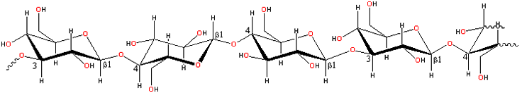

Barley gives β-glucan
β-Glucan is a texturizer and fat substitute.
β-Glucans occur in the bran of grasses (Gramineae) such as barley, oats, rye, and wheat, generally in amounts of about 7%, 5%, 2%, and less than 1%, respectively. They also occur in brown algae as the laminarans [4008].
A representative structure for grass β-glucans
Grass β-Glucans consist of linear
unbranched polysaccharides of linked β-(1 3)-
and β-(1
3)-
and β-(1 4)-D-glucopyranose
units in non-repeating but non-random order. Laminarans consist of polysaccharides of linked β-(1
4)-D-glucopyranose
units in non-repeating but non-random order. Laminarans consist of polysaccharides of linked β-(1 3)-
and β-(1
3)-
and β-(1 6)-D-glucopyranose
units with different β(1→3):β(1→6) ratios and β-(1
6)-D-glucopyranose
units with different β(1→3):β(1→6) ratios and β-(1 6)-branchpoints. [Back to Top
6)-branchpoints. [Back to Top  ]
]
Grass β-Glucans form 'worm'-like cylindrical
molecules containing up to about 250,000 glucose residues
that may produce cross-links between regular areas containing
consecutive cellotriose units. They aggregate in solution
[1681] to form thermoreversible
infinite network gels. 90% of the β-(1 4)-
links are in cellotriosyl and cellotetraosyl units joined
by single β-(1
4)-
links are in cellotriosyl and cellotetraosyl units joined
by single β-(1 3)-links
with no single β-(1
3)-links
with no single β-(1 4)-
or double β-(1
4)-
or double β-(1 3)-links
[234]. The ratio of
cellotriosyl/cellotetraosyl is about 2.0-2.4 in oats, about
3.0 in barley, and about 3.5 in wheat. An inter-varietal
study of glucans from barley and oats has been completed [787].
3)-links
[234]. The ratio of
cellotriosyl/cellotetraosyl is about 2.0-2.4 in oats, about
3.0 in barley, and about 3.5 in wheat. An inter-varietal
study of glucans from barley and oats has been completed [787].
Cyclic β-(1-3) (1-6)-glucans are water-soluble, neutral glucans synthesized in the periplasm of slow growing Rhizobiaceae, Rhizobium loti, Azorhizobium caulinodans, and Azospirillum brasilense. They are composed of 10 to 13 glucose residue molecules with some substituted at by phosphocholine, acetate, or succinate [3491]. [Back to Top  ]
]
The primary use of β-glucans is in texturizing as fat substitutes. They are recognized as having important positive health benefits centered around their benefits in coronary heart disease, cholesterol -owering, and reducing the glycemic response. Such health benefits are linked to its high viscosity, although it may be that some of these effects are due to appetite suppression. High molecular mass β-glucans are viscous due to labile cooperative associations, whereas lower molecular mass β-glucans can form soft gels as the chains are easier to rearrange to maximize linkages. Barley β-glucan is highly viscous and pseudoplastic, both properties decreasing with increasing temperature [748]. These properties cause difficulty in the brewing industry, negatively affecting fermentation and filtration.
Note that the related hydrocolloid curdlan has only β-(1 3)-D-glucopyranose
units which form thermoreversible triple helical structures on heating
and become irreversibly linked as the concentration or temperature
increases.
3)-D-glucopyranose
units which form thermoreversible triple helical structures on heating
and become irreversibly linked as the concentration or temperature
increases.
Laminarans possess significant immunostimulating, antiproliferative, antimetastatic, proapoptotic, radioprotective, and radiosensitizing effects [4008].
Interactive structures are available (Jmol). [Back to Top  ]
]
Home | Site Index | Hydrocolloids | Polysaccharide hydration | hydrogen-bonding | LSBU | Top
This page was established in 2002 and last updated by Martin Chaplin on 5 August, 2021